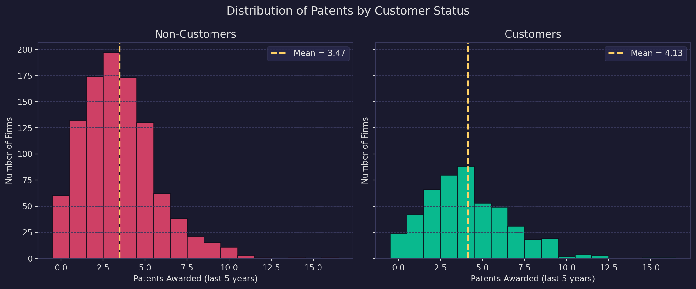
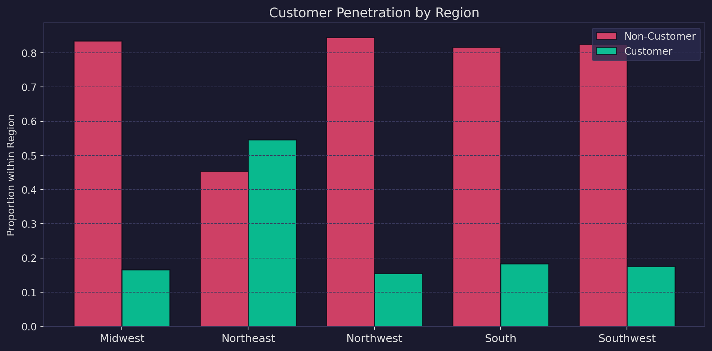
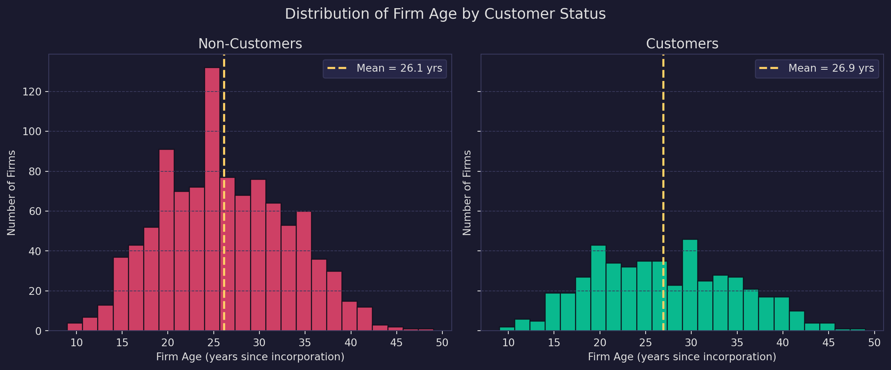
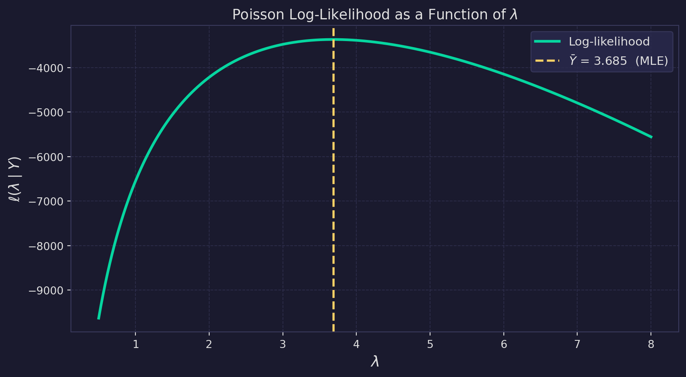
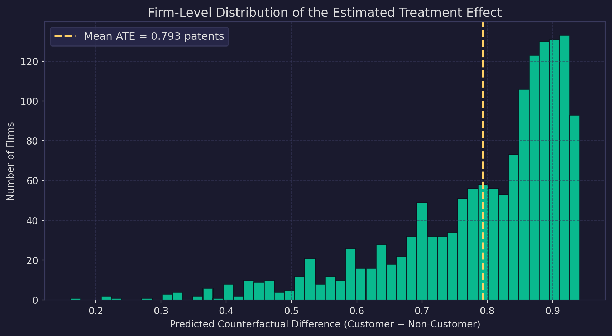

Poisson Regression and Maximum Likelihood Estimation
A Case Study of Blueprinty’s Software and Patent Awards
statistics
regression
MLE
causal inference
Introduction
Blueprinty is a small software firm whose product helps engineering companies prepare and submit patent applications to the U.S. Patent and Trademark Office. The company’s marketing team wants to make a straightforward-sounding claim: firms using Blueprinty software are more successful at getting patents approved. On the surface, verifying this seems simple: compare patent counts for customers versus non-customers and see who comes out ahead.
The difficulty is that Blueprinty’s customers are not a random sample of engineering firms. Companies that seek out specialized patent-application software tend to be those that are already highly active in patenting; they are well-resourced, strategically motivated, and often located in innovation-dense regions. Any raw difference in patent counts between customers and non-customers could therefore reflect these pre-existing firm characteristics rather than anything Blueprinty’s software contributes. In statistical terms, customer status is endogenous: it is correlated with variables that independently predict patenting success.
Blueprinty has collected cross-sectional data on 1,500 mature engineering firms, covering each firm’s patent count over the last five years, geographic region, years since incorporation, and software adoption status. Without a randomized experiment (where firms are randomly assigned to use the software), we cannot fully isolate the causal effect. What we can do is control for observable firm characteristics using a Poisson regression model estimated by maximum likelihood, and use that model to construct a more credible estimate of the software’s association with patent awards. This post walks through every step of that analysis, starting from first principles.
Exploring the Data
Mean patents — non-customers: 3.473
Mean patents — customers: 4.133
Raw difference: 0.660Blueprinty customers average about 0.66 more patents over the five-year window, a meaningful gap on its face. Both distributions are right-skewed with a long tail toward higher patent counts, which is typical of count data: most firms file a handful of patents, while a small number file many. Before drawing any conclusions, we need to check whether customers and non-customers differ in other ways that might account for this gap.

Customer penetration varies substantially across regions. The Northeast, home to dense clusters of technology and biomedical firms, shows far higher Blueprinty adoption than the Midwest or South. Because regions likely differ in their underlying industry mix and baseline patenting intensity, a naive comparison of customer versus non-customer patent counts would confound regional effects with any software signal. Region must enter the model as a control.

The age distributions are strikingly similar between the two groups. Customers average 26.9 years since incorporation versus 26.1 years for non-customers, a difference of less than one year. Both groups span roughly the same range (about 10–50 years) and peak around the mid-20s. This suggests that firm age is unlikely to be driving the patent-count gap we observed earlier. That said, age still belongs in the regression: even if the means are similar, firm age plausibly has a non-linear relationship with patenting (very young firms are still building capabilities; very mature firms may have pivoted away from heavy R&D), and controlling for it guards against confounding from the full age distribution rather than just its mean.
A Simple Poisson Model via Maximum Likelihood
The outcome variable (patents awarded over a five-year window) is a non-negative integer. Modeling such a quantity with a Normal distribution is problematic: Normal probability mass extends below zero (impossible for counts), and its symmetry misrepresents the right-skewed nature of patent data. The Poisson distribution is the natural starting point for non-negative integer outcomes. It is parameterized by a single rate \(\lambda > 0\), which equals both the mean and the variance:
\[Y_i \sim \text{Poisson}(\lambda), \qquad f(Y \mid \lambda) = \frac{e^{-\lambda}\,\lambda^{Y}}{Y!}, \quad Y = 0, 1, 2, \ldots\]
Deriving the likelihood and log-likelihood. Assuming the \(n\) observations are drawn independently from the same Poisson distribution, their joint probability, the likelihood, is the product of individual probabilities:
\[L(\lambda \mid Y_1, \ldots, Y_n) = \prod_{i=1}^{n} \frac{e^{-\lambda}\,\lambda^{Y_i}}{Y_i!} = e^{-n\lambda}\;\lambda^{\,\sum_i Y_i}\;\prod_{i=1}^{n}\frac{1}{Y_i!}\]
Taking the natural log converts the product into a sum, making it far easier to differentiate:
\[\ell(\lambda \mid Y) = -n\lambda + \left(\sum_{i=1}^{n} Y_i\right)\log\lambda - \sum_{i=1}^{n}\log(Y_i!)\]
The last term is a constant with respect to \(\lambda\) and can be ignored when optimizing.
Code
from scipy.special import gammaln
def poisson_loglikelihood(lam, Y):
"""Log-likelihood of Poisson(lam) for observed count vector Y."""
return np.sum(-lam + Y * np.log(lam) - gammaln(Y + 1))Plotting the log-likelihood over a range of \(\lambda\) values reveals the unique maximum — the MLE:
Code
lambdas = np.linspace(0.5, 8, 500)
log_liks = [poisson_loglikelihood(l, Y) for l in lambdas]
fig, ax = plt.subplots(figsize=(9, 5))
fig.patch.set_facecolor(BG)
ax.set_facecolor(BG)
ax.plot(lambdas, log_liks, color=C1, linewidth=2.5, label='Log-likelihood')
ax.axvline(Y.mean(), color=GOLD, linewidth=2, linestyle='--',
label=f'$\\bar{{Y}}$ = {Y.mean():.3f} (MLE)')
ax.set_xlabel('$\\lambda$', color=TEXT, fontsize=14)
ax.set_ylabel('$\\ell(\\lambda \\mid Y)$', color=TEXT, fontsize=13)
ax.set_title('Poisson Log-Likelihood as a Function of $\\lambda$', color=TEXT, fontsize=13)
ax.tick_params(colors=TEXT)
for sp in ax.spines.values():
sp.set_edgecolor(GRID)
ax.grid(color=GRID, linewidth=0.7, linestyle='--', alpha=0.6)
ax.legend(facecolor='#2a2a4e', edgecolor=GRID, labelcolor=TEXT, fontsize=11)
plt.tight_layout()
plt.show()
The curve is strictly concave with a unique peak at \(\hat{\lambda} = \bar{Y}\). To read the MLE off the plot, look for the \(\lambda\) value at the apex of the curve, which lies exactly at the sample mean, marked by the dashed line.
This result can be confirmed analytically. Differentiating \(\ell\) with respect to \(\lambda\) and setting the result to zero:
\[\frac{d\ell}{d\lambda} = -n + \frac{\sum_i Y_i}{\lambda} = 0 \implies \hat{\lambda}_{\text{MLE}} = \frac{1}{n}\sum_{i=1}^n Y_i = \bar{Y}\]
This is reassuring: the MLE of the Poisson rate parameter is simply the sample mean, which is exactly what intuition would suggest since \(\mathbb{E}[Y] = \lambda\). We can verify numerically:
Code
result_scalar = opt.minimize_scalar(
lambda lam: -poisson_loglikelihood(lam, Y),
bounds=(0.1, 20),
method='bounded'
)
print(f"Numerical MLE: λ̂ = {result_scalar.x:.5f}")
print(f"Sample mean: Ȳ = {Y.mean():.5f}")Numerical MLE: λ̂ = 3.68467
Sample mean: Ȳ = 3.68467The numerical optimizer and the closed-form formula agree to many decimal places. This confirms that our log-likelihood function is coded correctly and that the optimizer is finding the true maximum.
Poisson Regression
A single \(\lambda\) for all 1,500 firms is an unrealistic restriction: it forces every firm, regardless of age, region, or customer status, to have the same expected patent rate. Poisson regression relaxes this by letting the rate parameter vary across firms as a log-linear function of their observable characteristics:
\[Y_i \sim \text{Poisson}(\lambda_i), \qquad \lambda_i = \exp(X_i'\beta)\]
The exponential link is essential: while the linear predictor \(X_i'\beta\) can take any real value, \(\lambda_i\) must remain strictly positive, and \(\exp(\cdot)\) guarantees that. This is the canonical log-link Poisson GLM.
Substituting the firm-specific rate into the Poisson log-likelihood gives the regression log-likelihood:
\[\ell(\beta \mid Y, X) = \sum_{i=1}^{n}\Bigl(-e^{X_i'\beta} + Y_i\,X_i'\beta - \log(Y_i!)\Bigr)\]
Code
def poisson_regression_loglikelihood(beta, Y, X):
"""Log-likelihood for Poisson regression (log link).
Uses eta = X @ beta directly to avoid log(0) when exp(eta) underflows."""
eta = X @ beta
return np.sum(-np.exp(eta) + Y * eta - gammaln(Y + 1))Constructing the design matrix. The covariate matrix \(X\) includes:
- An intercept column of ones.
- Firm age, standardized (z-scored) to zero mean and unit variance. Standardizing the continuous predictors before fitting keeps the optimization surface well-conditioned so that BFGS converges reliably; predictions and the counterfactual analysis are unaffected. The relationship between age and patenting is likely non-linear — young firms are still building capabilities, very old firms may have shifted away from heavy R&D, and prime-age firms may be at peak patenting activity.
- Age squared (of the standardized age), to capture that curvature. Including a quadratic term lets the model fit an inverted-U (or any parabolic) age profile without imposing linearity.
- Region indicators for four of the five regions. We must drop one region (Midwest, the alphabetically first, serves as the reference category) to avoid perfect collinearity with the intercept; including all five dummies would create a redundant linear combination.
- The customer indicator (
iscustomer), whose coefficient is the parameter of primary interest.
Code
age_mean = df['age'].mean()
age_sd = df['age'].std()
df['age_s'] = (df['age'] - age_mean) / age_sd # standardized age
df['age_s2'] = df['age_s'] ** 2 # (std. age)²
region_dummies = pd.get_dummies(df['region'], drop_first=True).astype(float)
# drop_first=True removes 'Midwest'; reference category = Midwest
X = np.column_stack([
np.ones(len(df)), # intercept
df['age_s'].values, # age (std.)
df['age_s2'].values, # age² (std.)
region_dummies.values, # Northeast, Northwest, South, Southwest
df['iscustomer'].values # customer indicator
])
col_names = ['Intercept', 'Age (std.)', 'Age² (std.)',
'Northeast', 'Northwest', 'South', 'Southwest',
'Is Customer']Estimating \(\hat{\beta}\) by MLE. We maximize the log-likelihood numerically using the BFGS algorithm, which also approximates the inverse Hessian. Standard errors are the square roots of the diagonal of that inverse Hessian: since we are minimizing the negative log-likelihood, the BFGS inverse Hessian approximates \(\bigl[-\nabla^2\,\ell(\hat\beta)\bigr]^{-1}\), the inverse observed information matrix, which is the variance-covariance matrix of the MLE.
Code
def neg_ll(beta):
return -poisson_regression_loglikelihood(beta, Y, X)
beta0 = np.zeros(X.shape[1])
beta0[0] = np.log(Y.mean()) # warm-start intercept at log(mean patents)
result_reg = opt.minimize(
neg_ll,
x0=beta0,
method='BFGS',
options={'gtol': 1e-7, 'maxiter': 50_000}
)
beta_hat = result_reg.x
se_hat = np.sqrt(np.diag(result_reg.hess_inv))
z_hat = beta_hat / se_hat
p_hat = 2 * (1 - norm.cdf(np.abs(z_hat)))| Estimate | Std. Error | z-value | p-value | ||
|---|---|---|---|---|---|
| Intercept | +1.3447 | 0.0279 | +48.280 | < 0.001 | *** |
| Age (std.) | -0.0577 | 0.0147 | -3.933 | < 0.001 | *** |
| Age² (std.) | -0.1558 | 0.0119 | -13.047 | < 0.001 | *** |
| Northeast | +0.0292 | 0.0378 | +0.772 | 0.440 | |
| Northwest | -0.0176 | 0.0351 | -0.501 | 0.616 | |
| South | +0.0566 | 0.0385 | +1.470 | 0.142 | |
| Southwest | +0.0506 | 0.0447 | +1.130 | 0.258 | |
| Is Customer | +0.2076 | 0.0290 | +7.150 | < 0.001 | *** |
Cross-checking with statsmodels. As a sanity check, we fit the identical model using statsmodels.GLM. The coefficient estimates should match our BFGS solution closely; small differences in standard errors are expected because statsmodels derives them from the expected (Fisher) information matrix, while our BFGS approach approximates the observed Hessian numerically. Both are consistent estimators of the same quantity, though not numerically identical.
Code
X_df = pd.DataFrame(X, columns=col_names)
glm_res = sm.GLM(Y, X_df, family=sm.families.Poisson()).fit()
compare_df = pd.DataFrame({
'Estimate (BFGS)': [f'{b:+.4f}' for b in beta_hat],
'Estimate (GLM)': [f'{b:+.4f}' for b in glm_res.params.values],
'SE (BFGS)': [f'{s:.4f}' for s in se_hat],
'SE (GLM)': [f'{s:.4f}' for s in glm_res.bse.values],
}, index=col_names)| Estimate (BFGS) | Estimate (GLM) | SE (BFGS) | SE (GLM) | |
|---|---|---|---|---|
| Intercept | +1.3447 | +1.3447 | 0.0279 | 0.0384 |
| Age (std.) | -0.0577 | -0.0577 | 0.0147 | 0.0150 |
| Age² (std.) | -0.1558 | -0.1558 | 0.0119 | 0.0135 |
| Northeast | +0.0292 | +0.0292 | 0.0378 | 0.0436 |
| Northwest | -0.0176 | -0.0176 | 0.0351 | 0.0538 |
| South | +0.0566 | +0.0566 | 0.0385 | 0.0527 |
| Southwest | +0.0506 | +0.0506 | 0.0447 | 0.0472 |
| Is Customer | +0.2076 | +0.2076 | 0.0290 | 0.0309 |
The estimates agree closely across both methods; any discrepancy is at the fourth decimal place or smaller, well within numerical precision. Standard errors from BFGS are slightly different (and slightly larger in most cases) because the observed Hessian captured at the BFGS solution is a numerical approximation, whereas the GLM information-matrix SEs are derived from the analytical expected information.
Interpreting the coefficients. Because the model uses a log link, coefficients enter multiplicatively: a one-unit increase in \(X_j\) multiplies \(\lambda_i\) by \(e^{\hat\beta_j}\), holding all other variables fixed.
- Age (std.) and Age² (std.) together produce a hump-shaped (inverted-U) relationship with peak expected patent rate at approximately 25 years of incorporation. Because the quadratic coefficient is negative, the parabola opens downward: very young firms are still building capacity and patent less, output peaks around age 25, then declines for older firms, with the drop steepening considerably beyond 35 years. Both coefficients are highly statistically significant.
- Region effects are relatively small and imprecisely estimated after controlling for age and customer status; the Northeast edge over the Midwest (the reference) does not clear conventional significance thresholds once other covariates are held fixed.
- The customer coefficient (+0.208) is positive and highly statistically significant (\(z = 7.15\), \(p < 0.001\)), providing regression-adjusted evidence that Blueprinty users file more patents than comparable non-users. Exponentiating gives \(e^{0.208} \approx 1.23\), meaning customers are associated with a roughly 23% higher expected patent rate, all else equal. The next section translates this into a more interpretable absolute number.
The Effect of Blueprinty’s Software
The customer coefficient tells us the log of the multiplicative patent-rate ratio for customers versus non-customers, holding age and region fixed. This is mathematically clean but not intuitively natural, since it is not immediately obvious what “0.2 log-patents more” means in practice. A more useful summary is the average marginal effect: how many additional patents per firm we would predict if every firm adopted Blueprinty’s software, compared with a world where no firm did.
To compute this, we construct two counterfactual design matrices: one with iscustomer = 0 for every firm and one with iscustomer = 1, keeping each firm’s actual age and region fixed. We then predict expected patent counts under each scenario and average the difference.
Code
X0 = X.copy(); X0[:, -1] = 0 # all firms set to non-customer
X1 = X.copy(); X1[:, -1] = 1 # all firms set to customer
y0 = np.exp(X0 @ beta_hat) # predicted patents, no Blueprinty
y1 = np.exp(X1 @ beta_hat) # predicted patents, with Blueprinty
ate = (y1 - y0).mean()
print(f"Avg. predicted patents (non-customer world): {y0.mean():.3f}")
print(f"Avg. predicted patents (customer world): {y1.mean():.3f}")
print(f"Average treatment effect: {ate:.3f} additional patents")
print(f"Percentage increase: {ate / y0.mean() * 100:.1f}%")Avg. predicted patents (non-customer world): 3.436
Avg. predicted patents (customer world): 4.229
Average treatment effect: 0.793 additional patents
Percentage increase: 23.1%
Holding each firm’s age and region at its observed values, the Poisson regression model estimates that using Blueprinty’s software is associated with roughly 0.79 additional patents over five years, an increase of roughly 23% relative to the non-customer counterfactual baseline of about 3.4 predicted patents. The distribution of firm-level effects is right-skewed and strictly positive (as must be the case with an exponential link and a positive customer coefficient), meaning the estimated benefit scales with how patent-active a firm is predicted to be.
What this analysis does and does not establish. The regression-adjusted estimate is substantially more credible than a raw comparison of means, because it accounts for the fact that Blueprinty customers are disproportionately located in the Northeast and tend to be younger firms. After controlling for these factors, a meaningful positive association remains.
That said, this is an observational study. Even after controlling for age and region, firms that choose to adopt Blueprinty may differ from non-adopters along dimensions we cannot observe, such as a stronger internal patent strategy, better relationships with patent attorneys, or higher R&D budgets. Any such unobserved confounder that is correlated with both software adoption and patent success would bias our estimate upward. The analysis provides evidence consistent with Blueprinty’s marketing claim, but only a randomized experiment (where firms are randomly assigned to use or not use the software) can establish causality with confidence.